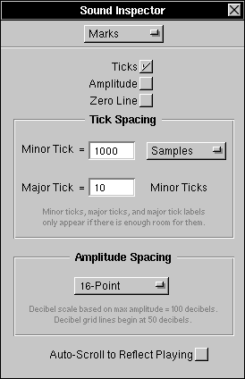

The Marks Inspector
The Marks Inspector lets you change the sound's Ruler and Amplitude Grid settings, and whether or not to display a Zero Line. It also allows you to set whether or not a window will automatically scroll to reflect the current position of a playing sound. To display the Marks Inspector, you need to bring up the Sound Inspector with the Tools Menu, and then choose Marks: 
For information on the Ruler, press here: 
For information on the Amplitude Grid, press here: 
For information on the Zero Line, press here: 

 To display the ruler in a sound, check the Ticks button.
To display the ruler in a sound, check the Ticks button.
 To display the Amplitude Grid in a sound, check the Amplitude button.
To display the Amplitude Grid in a sound, check the Amplitude button.
 To display a Zero Line in a sound, check the Zero Line button.
To display a Zero Line in a sound, check the Zero Line button.
 To change Minor Tick Spacing, type a number in the Minor Tick Field, and to its right, determine the measurement this number uses (Samples, Seconds, or Percent). For example, in the picture above, minor ticks mark every ten percent of the sound.
To change Minor Tick Spacing, type a number in the Minor Tick Field, and to its right, determine the measurement this number uses (Samples, Seconds, or Percent). For example, in the picture above, minor ticks mark every ten percent of the sound.
 To change Major Tick Spacing, type a number in the Major Tick Field. Major Ticks appear every few Minor Ticks, as determined by this Field. In this example, Major Ticks appear every ten minor ticks. Since the minor ticks appear every ten percent, the major ticks appear only at the zero and one-hundred-percent marks. Major Ticks have labels which appear if there is enough room.
To change Major Tick Spacing, type a number in the Major Tick Field. Major Ticks appear every few Minor Ticks, as determined by this Field. In this example, Major Ticks appear every ten minor ticks. Since the minor ticks appear every ten percent, the major ticks appear only at the zero and one-hundred-percent marks. Major Ticks have labels which appear if there is enough room.
 To change the type of Amplitude Grid used, change the Amplitude Spacing. Currently Amplitude Spacing can be changed to a 20-point, 16-point, or 24-point grid (where the Y axis is divided evenly into points), or to a Decibel grid (where the grid is logarithmic).
To change the type of Amplitude Grid used, change the Amplitude Spacing. Currently Amplitude Spacing can be changed to a 20-point, 16-point, or 24-point grid (where the Y axis is divided evenly into points), or to a Decibel grid (where the grid is logarithmic).
 Choosing Auto-Scroll to Reflect Playing allows you to set whether or not a window will automatically scroll to reflect the current position of a playing sound. If chosen, a sound will scroll throughout the duration of its playing, always keeping the current playing sample at the left side of the window. For more information, read about the play mark in the Ruler:
Choosing Auto-Scroll to Reflect Playing allows you to set whether or not a window will automatically scroll to reflect the current position of a playing sound. If chosen, a sound will scroll throughout the duration of its playing, always keeping the current playing sample at the left side of the window. For more information, read about the play mark in the Ruler: